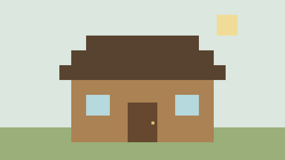
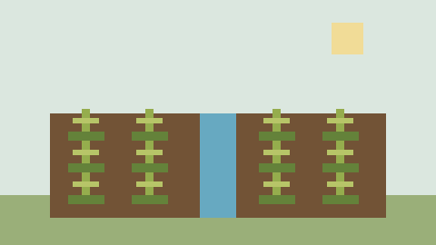
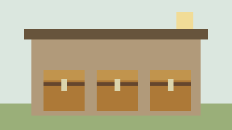
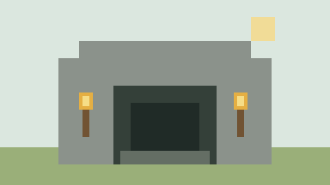
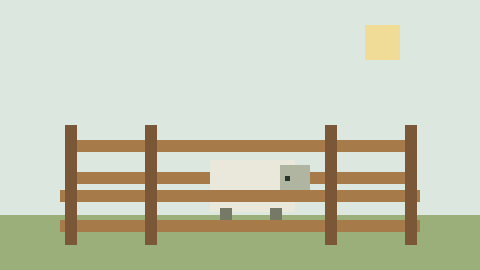
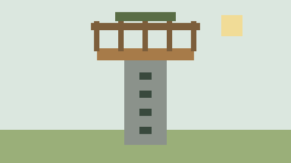

Casa pequena
Um abrigo de madeira j� resolve o come�o. Deixe espa�o para a cama e ilumine a entrada.
Ver como come�arMinecraft | Minha base
Guia de sobreviv�ncia
Depois de passar a primeira noite, d� para melhorar a base aos poucos. Separei seis constru�oes que ajudam no come�o, sem precisar de materiais dif�ceis de encontrar.
Planejar minha base
Um abrigo de madeira j� resolve o come�o. Deixe espa�o para a cama e ilumine a entrada.
Ver como come�ar
Separe um canto perto da �gua para plantar. Assim fica mais f�cil ter comida antes de explorar.
Ver como come�ar
Organize os ba�s por tipo de item. Isso evita perder tempo procurando blocos e ferramentas.
Ver como come�ar
Fa�a uma entrada f�cil de encontrar e coloque tochas no caminho para ajudar na volta.
Ver como come�ar
Um cercado perto da base ajuda a manter os animais juntos e facilita a cria�ao.
Ver como come�ar
Uma torre simples serve como ponto de refer�ncia para localizar a base de longe.
Ver como come�ar